当 Covid-19 在武汉爆发，某低价(平均售价等同于2美金)快消品连锁品牌的华中区（7个省，415个门店）瞬间陷入库存双峰危机：缺货率与呆滞库存并存，双双创下历史新高。
管理层深感棘手：补货认知短板卡了规模增长(割韭菜)的脖子，意识到品牌知名度和流量在这个场景没用。为此，该企业启动外部顾问竞标，寻找破局方案。
1. 在“批发->倾销->抢市场”的GTM策略下，几十万长尾SKU，叠加多渠道多门店，导致上亿个需求计划单元（DFU）的需求信号充满噪音；
2. 突发疫情不仅扰乱销售节奏而且切断中段运输，一线计划员在缺乏约束推演机制的情况下，只能靠“花式编过程”应对：
POC范围：选取华中区（7省，415家门店）几个核心大品类，33,040个SKU，采用 20年Q4数据 进行实战验证：
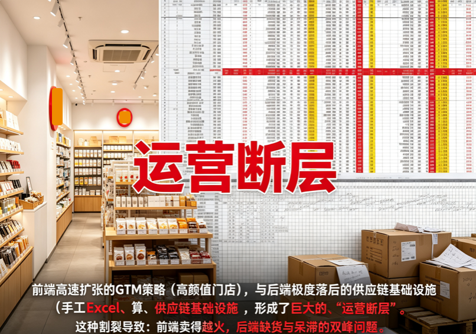
口径：汇总 (每天每店的销量*组合价)/ count(店铺*天数) ----剔除当天无销量的店铺
口径：月至今所有日结库存金额 / 月至今所有销售额（当月销售额=实收价*数量）;
日结库存金额 (按组合价计算，排除装材配件，赠品) = 当天期末库存数量*组合价;
口径：汇总 (每天每店的期末库存*组合价)/count(店铺*天数)
口径：Top 300 销售额/整体销售额
口径：Top 300 SKU 缺货天数 / (Top 300 销售天数 + Top 300 缺货天数)
| 维度 | 行业特性 (As-Is / 痛点) | 数字化转型 虚实分辨 与 核心 GAP | 破局思路 (To-Be / 数字化填坑) |
|---|---|---|---|
| 需求信号与噪音 | 优先倾销抢市场（GTM）策略导致时序特征被严重污染： 商品低价高频：<$10； 产品换代极快； 几万长尾SKU； 多渠道+多门店(3000+)； 上亿个需求计划单元DFU（Demand FCST Unit）; |
DFU极度稀疏，信噪比极低： 微观Location×SKU预测的CV（变异系数）普遍>1.5，ML模型ROI为负。 缺货、促销、窜货导致POS数据严重失真，历史销量无法代表真实需求。 |
降维与数据净化： 1. 放弃微观预测，基于生命周期和销售表现做Item Classification 💡1； 2. 预测退化为ADU/移动平均； 3. 在Aggregate维度（如门店×品类）看时序特征； 4. 先做缺货回填（Demand Pattern Recovery），再谈预测精度优化; |
| 计划与流程 | Process Engineering和Intergrated Business Planning意识薄弱： 老板只看结果不管过程； 职能部门“花式编过程”； 结果指标滞后、多因、难归因; 个位数的区域计划员，无法及时动态的管理上亿个需求计划单元DFU; |
流程节点不互锁，权责交错： 过程管控成本>收益，导致组织不信任流程; 在缺乏S&OP稳定性时，任何基于FCST精度的前置计划都会失效，形成“猜疑链”; |
放弃过程管控，聚焦结果护栏： 打造不依赖S&OP稳定性和FCST精度的 Supply Planning Process Re-engineering Solution（破局关键）💡2; 聚焦库存健康度（双峰压降），打造自感知，自决策，自适应的异常自动纠错机制💡3; |
| 组织与决策 | 信息即权力，高管模糊保留裁量权： 数据中台多为老板服务； 老板不知细节，向下极限施压，等底下人反馈极限边界。 每一次试探都消耗相互的信任; |
权力与控制 > 一线赋能： 决策信息以“权力”而非“数据”为轴心; 缺乏将“既要又要还要”的冲突约束，转为可计算选项的推演机制; |
打造“拍板模拟器（What-if Simulator）”： 不求100%赋能一线，只求辅助高层决策尽量给一线减负，减少不必要的内部摩擦; 基于约束条件，展现需要Trade-off的关键决策点，并自动生成极端优化下的“保销售/保现金/保履约”多套选项; |
| 产品与交付 | 客户数据基础差，POC白嫖方案频发，买断制重定制易烂尾。 | 客户缺乏买断系统的能力和信用背书： 传统交付模式周期长、沉没成本高。在客户没有契约精神的现状下，重资产交付等于把风险全部留给乙方; |
独立部署 + 订阅服务（SaaS化）： 底层独立（独立数据模型/仓/部署）； 按付费提供算力服务； 按需推进数据治理（工作量/费用另算）; |
覆盖：缺货回填算法、POS清洗逻辑、基于聚合维度的时序特征提取
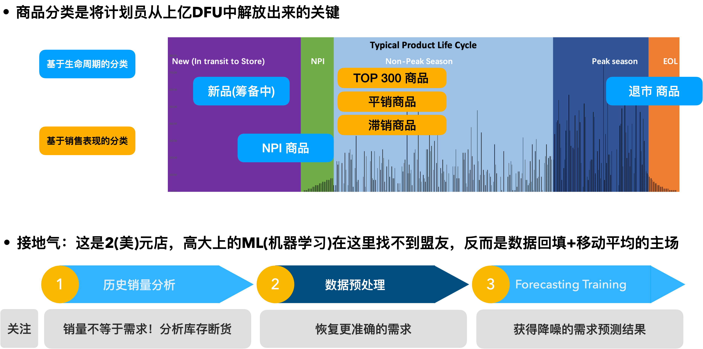
传统计划员啥时候开始感受到 DDMRP 的海纳百川？需要上下游协同拉扯博弈的时候，举例：
1. MOQ 困境：计算完了补货数量才发现还要根据 最低起订量、箱数修正 --> 对于 DDMRP 来说就是配置一下绿区的组成之一：MOQ 的参数，你怎么下单都比 MOQ 大；
2. 运力争夺：运力紧缺承运商要甩柜了，你是想让人家随机甩柜，还是拿着优先级清单据理力争抢着上车？ --> 依据 Net Flow Position 给补货需求排序，NFS 水位越低，需求优先级越高。
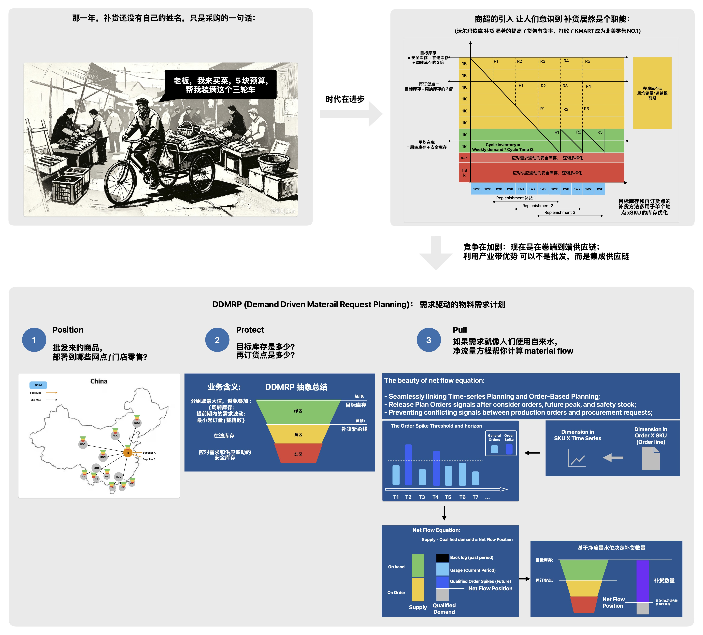
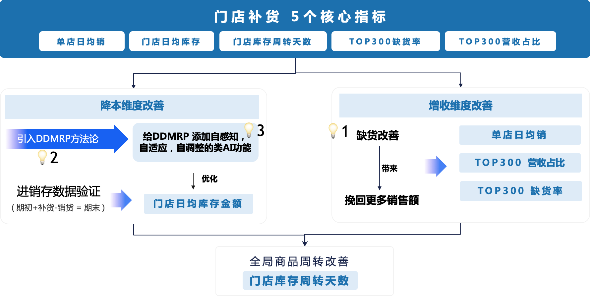
所有挑战均达标
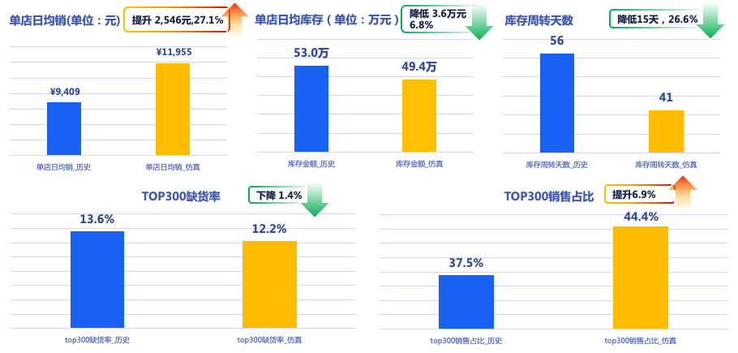
Recall 客户定义的缺货口径，计算取两者交集;
缺货口径：门店可用存库小于等于0，或缺货数量大于0;
缺货数量 = ( 平均发货间隔天数+在途天数 ) 14天日均销 – ( 门店可用库存+门店在途 )
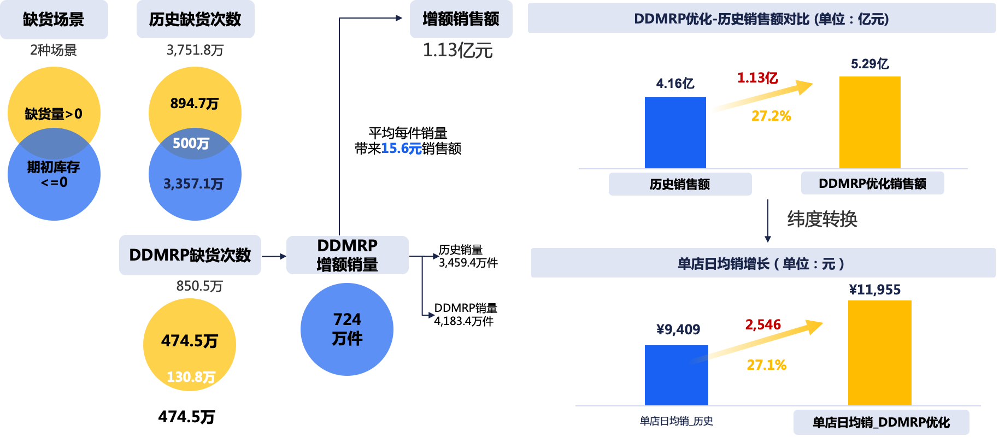
PS: 销售额上升+结余库存下降 --> 门店库存周转天数自然而然下降
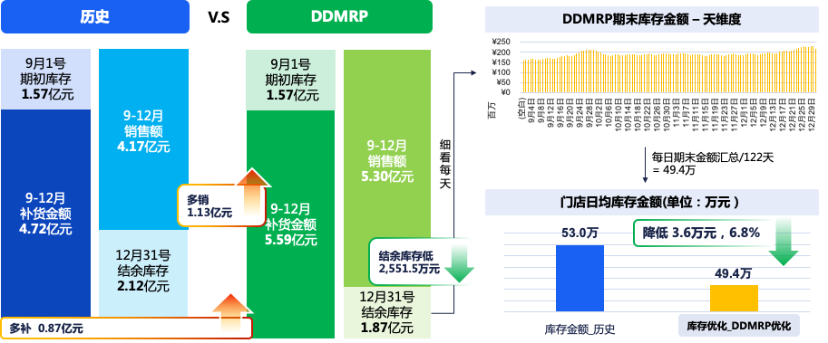
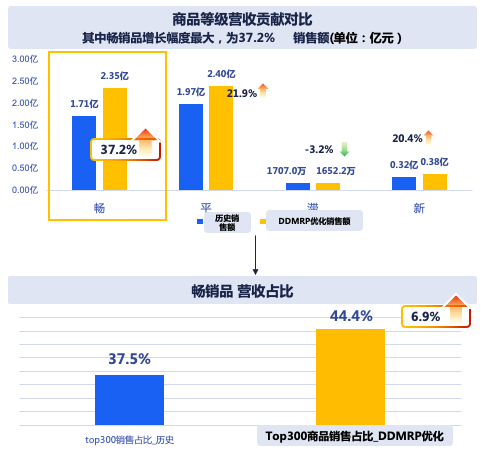
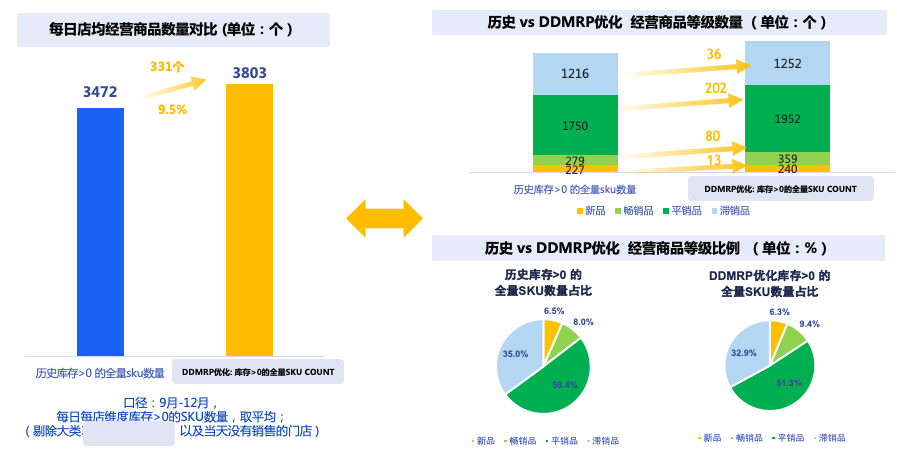
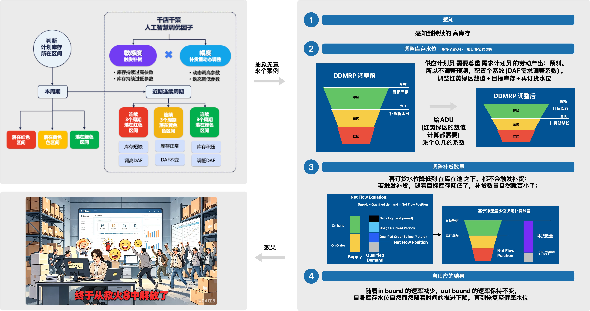
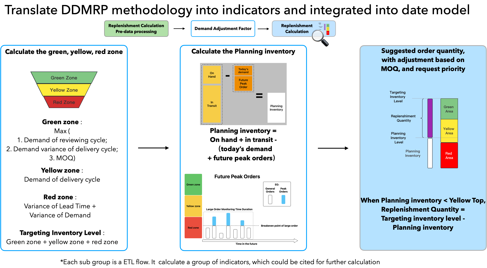
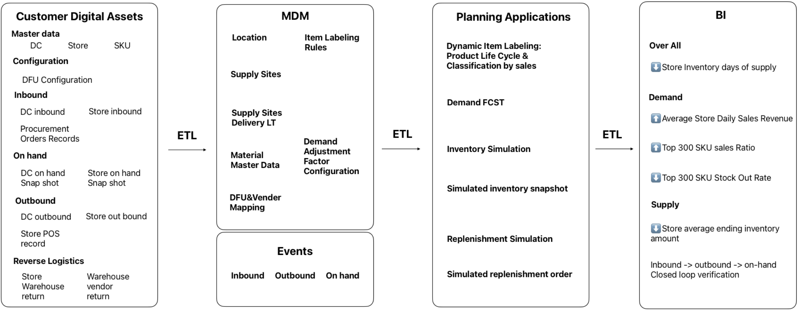
历经头部快消品牌 415 门店、1382万 DFU 的 1 年期测试。战略性承担百万级研发成本，换取 COVID-19 华中区断链与双峰危机的“稀缺极端混乱场景的真实数据”与算法淬炼。
自感知 DDMRP 架构成熟。因新茶饮与快消零售在“高频低价、多门店、库存双峰”等痛点高度同源，方案正式启动新茶饮行业的规模化降维部署。
提供“底层独立部署（数据主权） + 算力按需订阅（低成本敏捷接入）”的SaaS化服务，彻底打破传统重定制项目易烂尾的商业魔咒。